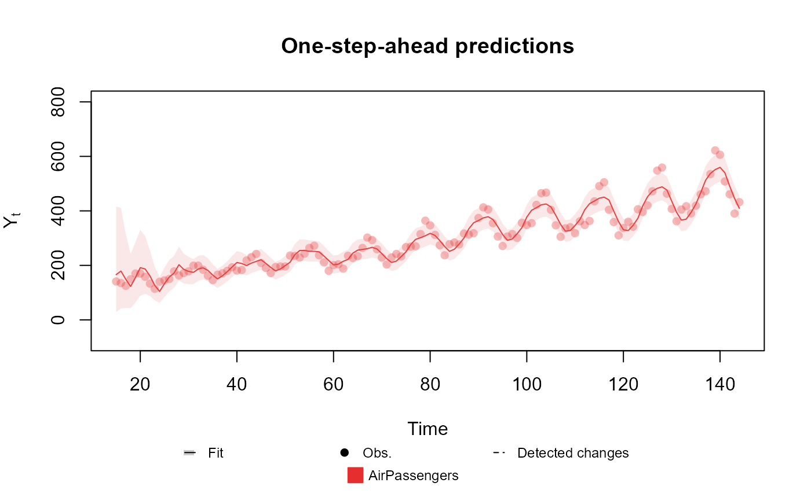

Creates an outcome with Poisson distribution with the chosen parameter.
Usage
Poisson(lambda, data, offset = as.matrix(data)^0)Arguments
- lambda
character: The name of the linear predictor associated with the rate (mean) parameter of the Poisson distribution. The parameter is treated as unknown and equal to the exponential of the associated linear predictor.
- data
numeric: The values of the observed data.
- offset
numeric: The offset at each observation. Must have the same shape as data.
Details
For evaluating the posterior parameters, we use the method proposed in Alves et al. (2023) .
For the details about the implementation see dos Santos Jr. et al. (?) .
References
Mariane
Branco Alves, Helio
S. Migon, Raíra Marotta, Silvaneo
V.
dos
Santos
Jr. au2 (2023).
“k-parametric Dynamic Generalized Linear Models: a sequential approach via Information Geometry.”
doi:10.48550/ARXIV.2201.05387
, https://arxiv.org/abs/2201.05387.
Silvaneo
V. dos Santos Jr., Mariane
Branco Alves, Helio
S.
Migon au2 (?).
“kDGLM: an R package for Bayesian analysis of Dynamic Generialized Linear Models.”
doi:?
, ?, ?.
See also
Other auxiliary functions for a creating outcomes:
Gamma(),
Multinom(),
Normal(),
summary.dlm_distr()
Examples
data <- c(AirPassengers)
level <- polynomial_block(rate = 1, D = 0.95, order = 2)
season <- harmonic_block(rate = 1, period = 12, D = 0.975)
outcome <- Poisson(lambda = "rate", data = data)
fitted.data <- fit_model(level, season,
AirPassengers = outcome
)
summary(fitted.data)
#> Fitted DGLM with 1 outcomes.
#>
#> distributions:
#> AirPassengers: Poisson
#>
#> Coeficients (smoothed) at time 144:
#> Estimate Std. Error t value Pr(>|t|)
#> Var.Poly.Level 6.20358 0.01395 444.54451 <1e-12 ***
#> Var.Poly.Slope 0.00885 0.00050 17.62949 <1e-12 ***
#> Var.Sazo.Main -0.16677 0.01185 -14.07743 <1e-12 ***
#> Var.Sazo.Aux -0.08256 0.01212 -6.81208 9.62e-12 ***
#> ---
#> Signif. codes: 0 ‘***’ 0.001 ‘**’ 0.01 ‘*’ 0.05 ‘.’ 0.1 ‘ ’ 1
#>
#> ---
#> One-step-ahead prediction
#> Log-likelihood : -620.02939
#> Interval Score : 124.40769
#> Mean Abs. Scaled Error: 0.70932
#> Relative abs. Error : 0.08027
#> Mean Abs. Error : 22.71961
#> Mean Squared Error : 755.69697
#> ---
plot(fitted.data, plot.pkg = "base")

#> NULL